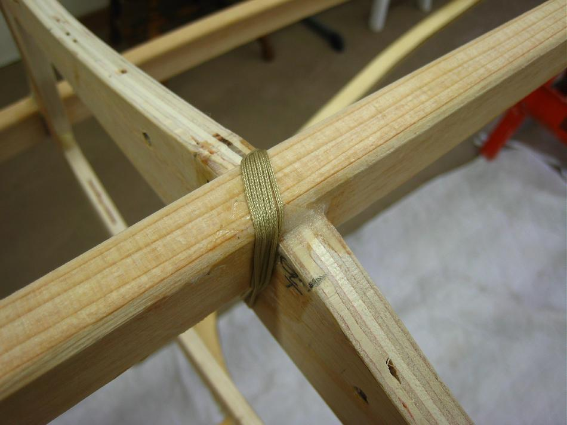

| Lash / Glue Frame | Menu Previous Page Next Page |
|

Tightly tie a knot or two in the first loop of line insuring that the knot is not resting on the keel bottom. Leave a few inches of extra lashing hanging from the knot. Tightly wrap the lashing 5 or 6 times aroung the keel and cross section. Tie the lashing to the original excess line with a couple more knots. Cut off any excess line still hanging down.
|
|